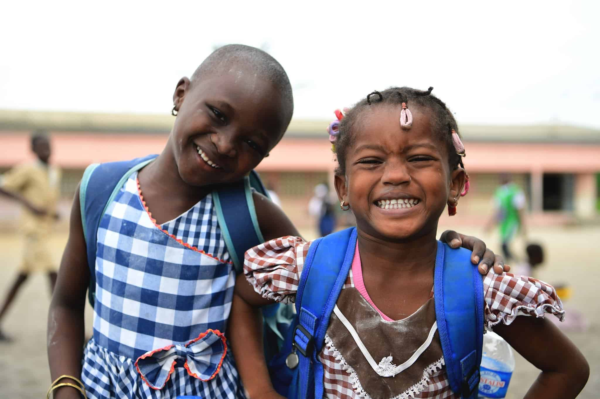
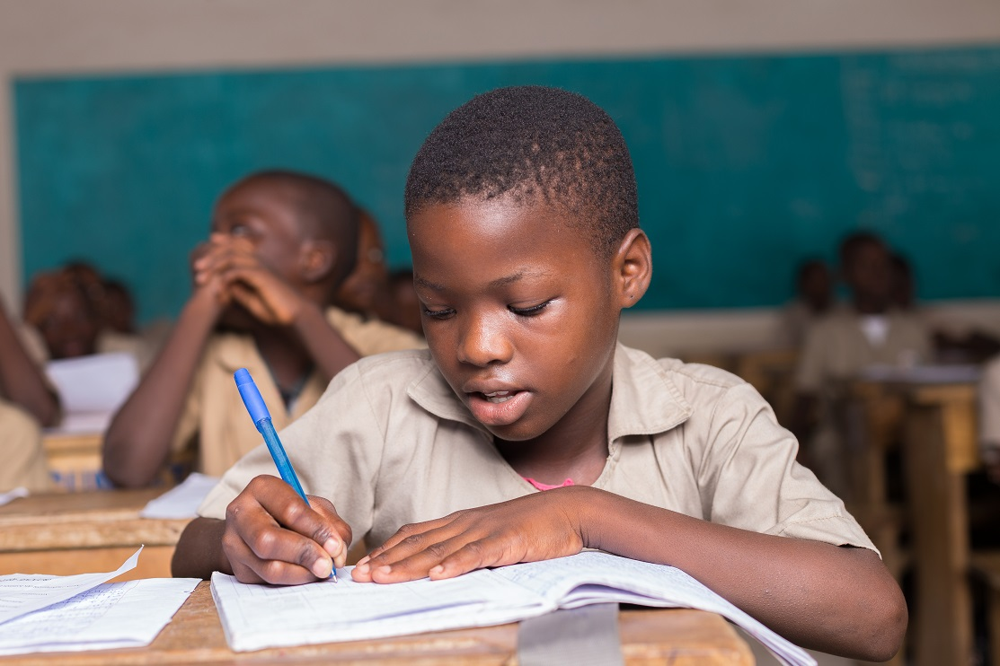
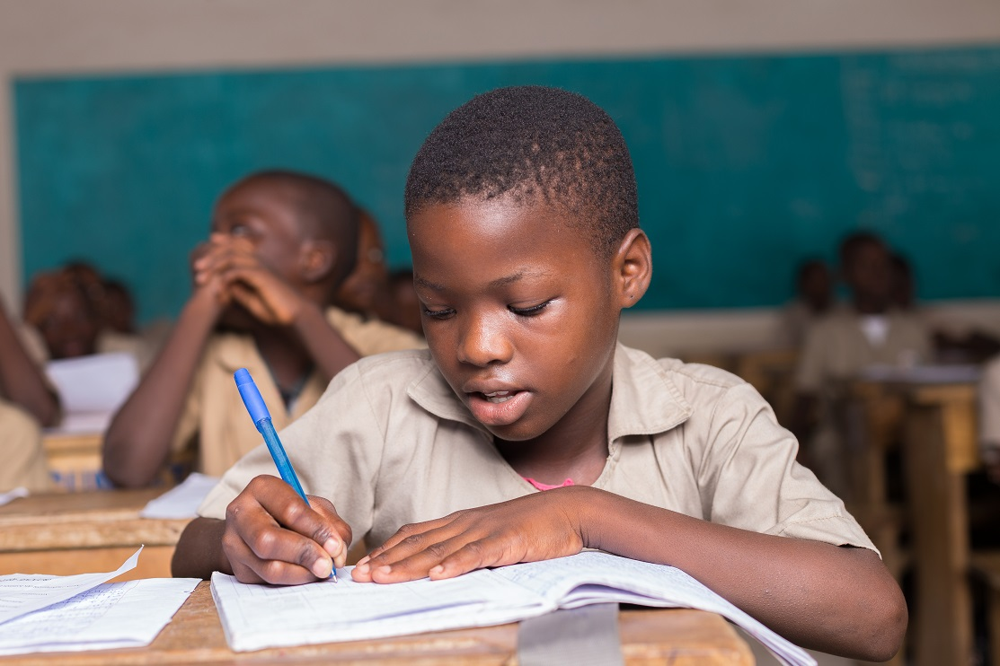
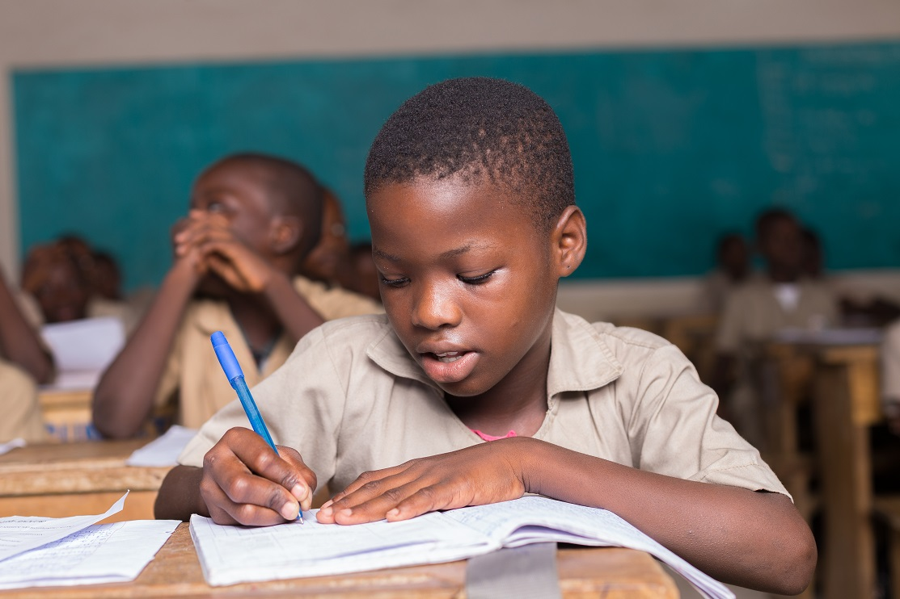
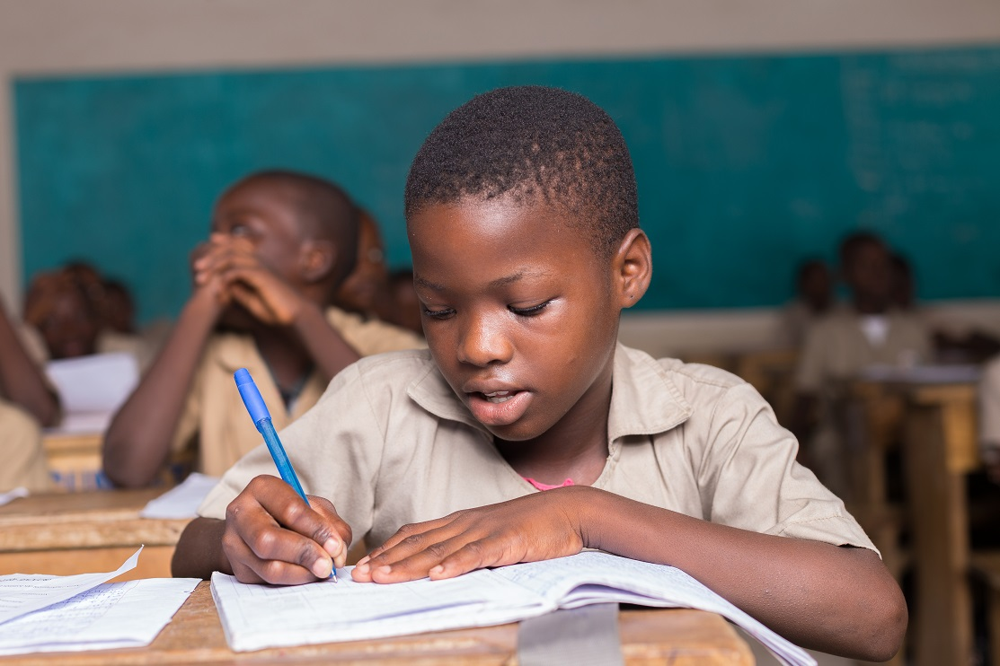

 


Découvrez nos initiatives et nos actions pour une éducation de qualité.

La Direction de l'Animation, de la Promotion et du Suivi des Comités de Gestion des Établissements Scolaires (DAPS-COGES) est une structure du ministère de l'Éducation nationale et de l'Alphabétisation en Côte d'Ivoire. Elle est chargée de superviser et d'accompagner les Comités de Gestion des Établissements Scolaires (COGES), qui jouent un rôle clé dans la gestion administrative, matérielle, financière et comptable des établissements scolaires. Les COGES sont responsables de l'utilisation des ressources allouées par l'État, les collectivités territoriales et d'autres sources, afin d'assurer le bon fonctionnement et l'entretien des écoles. La DAPS-COGES veille à la mise en œuvre des réformes et à l'élaboration de manuels de procédures pour harmoniser et optimiser la gestion des établissements scolaires à travers le pays.
📅 27 Février 2025

📅 17 Février 2025
📅 6 Février 2025